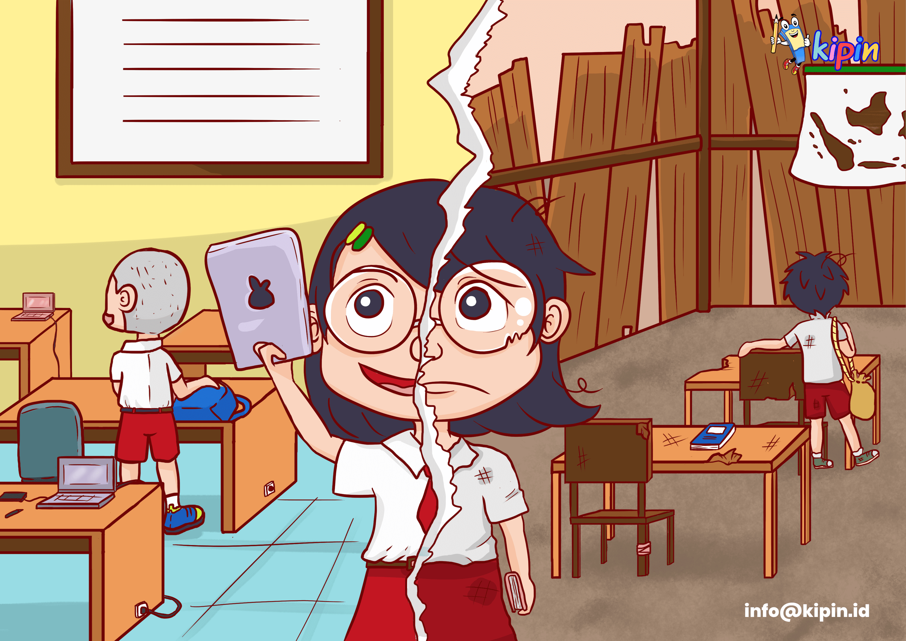
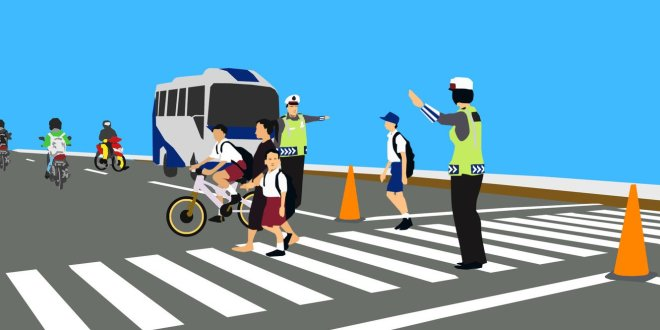
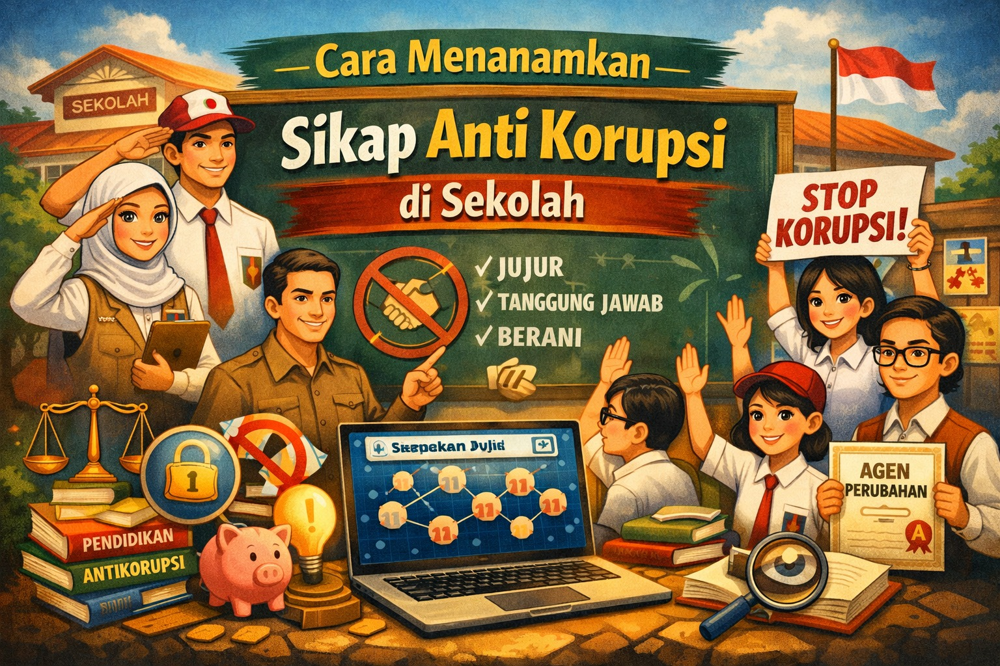

Konsep Utama
Pemenuhan hak dan pelaksanaan kewajiban warga negara merupakan suatu proses yang idealnya berjalan seimbang. Namun, dalam kenyataannya, proses ini sering kali menghadapi berbagai tantangan, baik yang berasal dari dalam diri individu (internal) maupun dari sistem dan lingkungan sekitar (eksternal).
Implementasi & Realita
Tantangan ini menyebabkan terjadinya pelanggaran hak (seseorang tidak mendapatkan apa yang seharusnya ia terima) dan pengingkaran kewajiban (seseorang tidak melakukan apa yang seharusnya ia kerjakan). Contoh konkret dalam kehidupan sehari-hari adalah tingginya angka putus sekolah yang mencerminkan belum terpenuhinya hak atas pendidikan, atau warga yang dengan sengaja menghindari pembayaran pajak yang merupakan bentuk pengingkaran kewajiban kepada negara.

Masih adanya fasilitas pendidikan yang belum merata merupakan salah satu tantangan nyata pemenuhan hak warga negara.
Faktor Internal
Sikap egois, apatis, dan rendahnya kesadaran hukum dari warga negara.
Faktor Eksternal
Penyalahgunaan kekuasaan, ketidaktegasnya aparat, dan kesenjangan ekonomi.
Dampak Utama
Terjadinya diskriminasi, ketidakadilan, dan terhambatnya pembangunan nasional.
Rendahnya Kesadaran Hukum
Tantangan dari dalam diri individu yang mengabaikan aturan demi kepentingan pribadi.
Ringkasan Materi
Tantangan internal yang paling signifikan adalah rendahnya kesadaran warga negara terhadap hukum dan aturan yang berlaku. Sikap individualis dan egois memicu seseorang untuk mendahulukan haknya namun abai terhadap kewajibannya. Hal ini menciptakan budaya ketidakpatuhan yang merugikan masyarakat luas dan menghambat ketertiban sosial.
Contoh Kasus Realistis
"Bayu sering kali mengendarai sepeda motor melawan arus lalu lintas dengan alasan agar lebih cepat sampai ke sekolah. Ia juga jarang memakai helm karena merasa jaraknya dekat dan kebetulan tidak ada polisi yang berjaga. Tindakan Bayu ini bukan hanya bentuk pengingkaran kewajiban mematuhi rambu lalu lintas, tetapi juga membahayakan keselamatan dirinya dan merampas hak pejalan kaki serta pengendara lain atas jalan raya yang aman."

Kesenjangan Sosial & Ekonomi
Hambatan struktural yang menyebabkan tidak meratanya pemenuhan hak-hak dasar warga negara.
Ringkasan Materi
Ketimpangan atau kesenjangan ekonomi yang tajam menjadi tantangan berat bagi negara dalam mewujudkan keadilan sosial. Hal ini membuat pemenuhan hak-hak dasar, seperti akses pendidikan berkualitas dan layanan kesehatan yang layak, sulit menjangkau seluruh lapisan masyarakat. Di sisi lain, tekanan ekonomi juga kerap menjadi pemicu warga negara sulit melaksanakan kewajibannya.
Contoh Kasus Realistis
"Siti, seorang anak usia 13 tahun di daerah terpencil, terpaksa putus sekolah karena harus bekerja membantu orang tuanya bertani guna memenuhi kebutuhan makan sehari-hari. Di daerahnya, fasilitas sekolah menengah sangat jauh dan kondisi jalannya rusak parah. Dalam kasus ini, hak Siti untuk mendapatkan pendidikan (sesuai UUD 1945 Pasal 31) belum terpenuhi akibat faktor ekonomi keluarga dan belum meratanya pembangunan infrastruktur oleh pemerintah daerah."
_tab3.jpg)
Penyalahgunaan Kekuasaan & Teknologi
Hambatan dari aparatur negara dan dampak negatif perkembangan digital.
Ringkasan Materi
Tantangan ini berasal dari oknum yang memiliki wewenang atau akses informasi. Penyalahgunaan kekuasaan, seperti praktik korupsi, secara langsung merampas hak rakyat atas dana pembangunan. Sementara itu, kemajuan teknologi informasi tanpa literasi digital yang baik melahirkan kejahatan baru yang mengancam hak atas privasi dan rasa aman masyarakat.
Contoh Kasus Realistis
"Terdapat oknum pejabat daerah yang tertangkap menyelewengkan dana bantuan sosial (Bansos). Akibat korupsi ini, banyak keluarga prasejahtera yang kelaparan karena tidak menerima hak bantuannya. Di sisi lain, seorang pelajar menyebarkan berita bohong (hoaks) bernada provokasi di grup media sosial, yang memicu keributan antarwarga dan melanggar hak orang lain untuk hidup tenang dan damai."

Dampak Kritis:
- Korupsi menghambat pemenuhan hak kesejahteraan sosial.
- Cyberbullying dan hoaks merusak persatuan (Sila ke-3).
- Menurunkan kepercayaan masyarakat terhadap hukum dan negara.
Kartu Pintar 3D
Uji ingatanmu! Klik kartu di bawah ini untuk membaliknya dan melihat jawaban. Pahami konsepnya sebelum lanjut ke Asesmen.
Evaluasi Pemahaman
Jawablah pertanyaan berikut dengan satu atau dua kata secara tepat.
Materi Selesai!
Kamu telah menyelesaikan materi Bab 1 Subbab D: Tantangan Pemenuhan Hak dan Kewajiban Warga Negara.
Mari bersama tingkatkan kesadaran hukum, hindari sifat egois, dan bijak berteknologi demi terwujudnya keadilan sosial bagi seluruh rakyat Indonesia.
Referensi: Buku Panduan Guru Pendidikan Pancasila SMP/MTs Kelas IX, Kementerian Pendidikan, Kebudayaan, Riset, dan Teknologi, Edisi Revisi 2023.